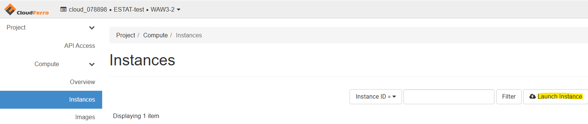
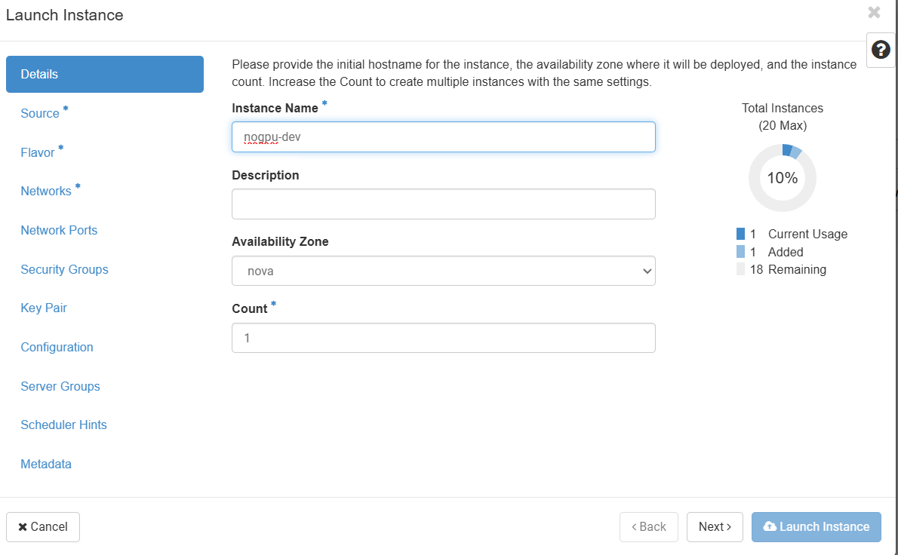
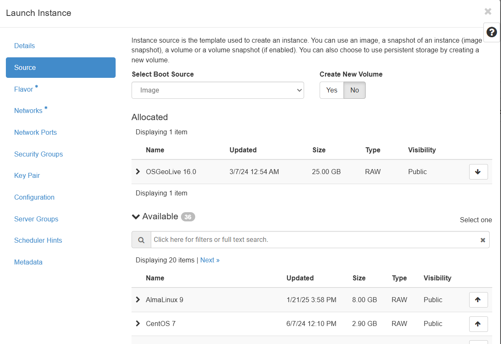
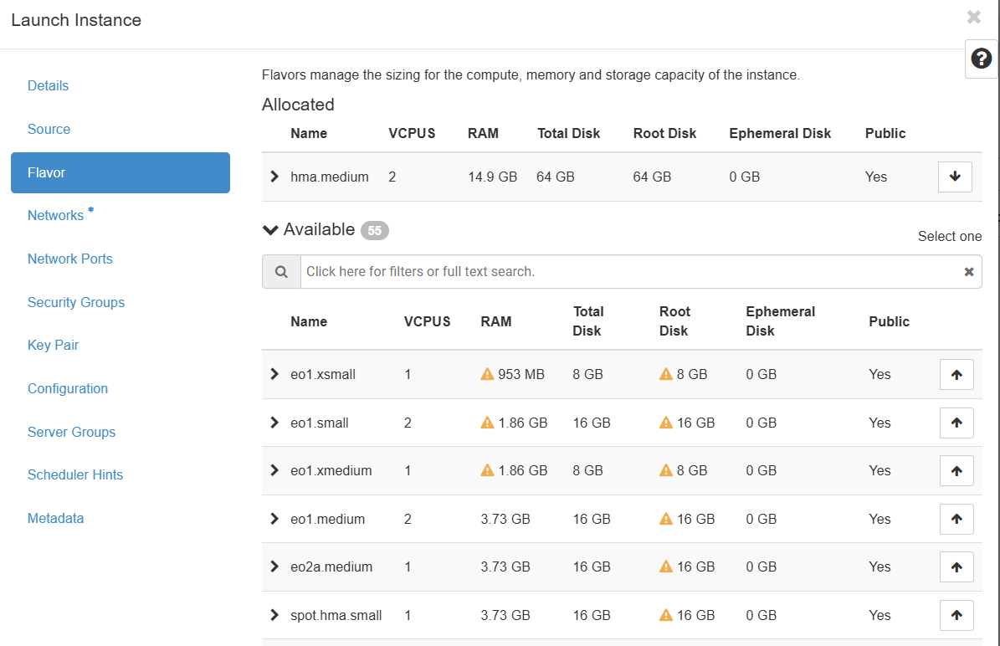
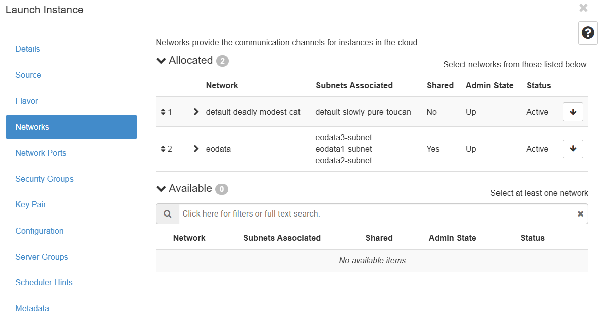
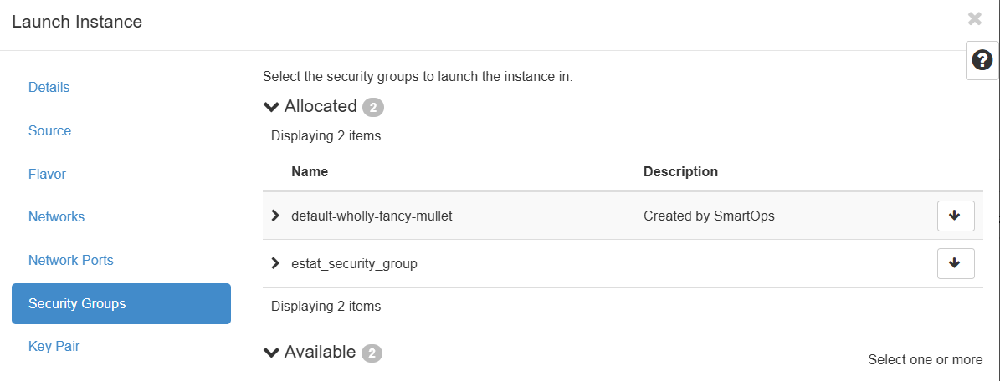
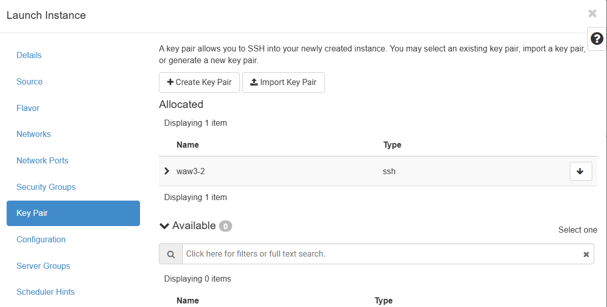
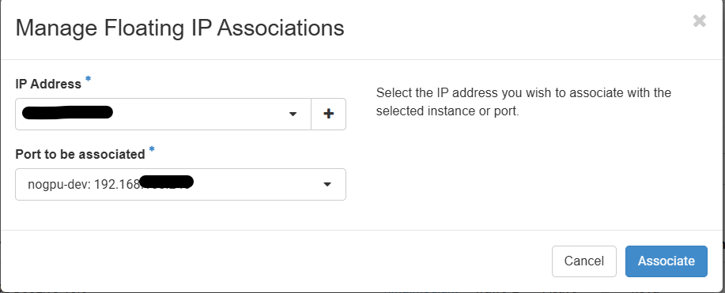
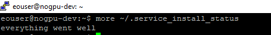

Step by step instructions to recreate the customized OSGeoLive image with additional services#
After login in to the Horizon dashboard go to the Instances in the left menu and choose Launch Instance.

In the new window first you give a name to your instance

Then select the source of the image: OSGeoLive 16.0

The next step is to select the flavor of the instance e.g. size of CPU, RAM and disk.
Important
The instance should have at least 40GB of disk!

Under the networks add both networks

Under the Security Groups enable the following ports for incoming connections:
22 (SSH)
3389 (RDP)
3838 (Shiny)
8000 (JupyterHub)
8088 (Superset)
8787 (Rstudio)
Note
In the account there can be already predefined security groups contain these port. If not, you have to create it following these instructions

Finally you select or create an SSH key pair that will be used to connect to the instance for the first time.

Launch the instance and wait until it will be running
Create and associate an external IP following these steps

Then you can access your instance with an SSH client using the key from step 7 and the username is eouser. Then the first step will be to create a password for the default user (eouser). After creating the password the connection will be automatically closed.

To enable RDP and add the additional services you have to run the following shell script: add_services_nogpu.sh For that, you have to upload/copy (e.g. WinSCP) to the server. Make it executable and run in a terminal.
chmod +x add_services_nogpu.sh ./add_services_nogpu.sh
Important
Before you run the script replace in the script on row 136 the Superset admin password
<your_superset_password>with your own password.Note
The script runs and install all the services and libraries. The script restarts several times the server during the installation process and can last up to 1 hour. You can check the installation status with
more ~/.service_install_statusin the terminal. When it finishes the status will beeverything went well.

Accessing the services#
RDP
The service is available under the external IP:3389 created under step 9 above in standard RDP clients. In case you are behind proxy you can tunnel the internal IP:3389 through SSH to your localhost and connect to your localhost port with the RDP client.
Shiny
The service is available in a browser under the external IP:3838 created under step 9 above.
JupyterHub
The service is available in a browser under the external IP:8000 created under step 9 above. The username is eouser and password what is defined under step 10.
Apache Superset
The service is available in a browser under the external IP:8088 created under step 9 above. The username is eouser and password what is defined under step 11 defined in the add_services_nogpu.sh.
Rstudio
The service is available in a browser under the external IP:8787 created under step 9 above. The username is eouser and password what is defined under step 10.